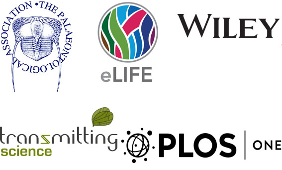

We are delighted to invite you to join us in Birmingham in September 2017 for the 65th SVPCA and 26th SPPC. This third circular provides important information about registration and abstract submission, and updated information on venues and the programme, including the field trip.
Many thanks to our sponsors, The Palaeontological Association, eLife, Wiley, PLOS ONE and Transmitting Science for their generous financial support of the meeting.

Registration
Registration is open now, through the University of Birmingham online shop:
http://bit.ly/2qiY473
Registration will remain open until midnight on Friday 14th July 2017.
Please note that you must register before submitting an abstract. There are four different fee levels:
- SVPCA/SPPC combined registration, full price: £65
- SVPCA/SPPC combined registration, student: £30
- SPPC only registration, full price: £20
- SPPC only registration, student: £10
We have endeavoured to keep registration costs broadly in line with those from recent years. For organisational simplicity we are not offering a SVPCA only registration this year, as SPPC will not take place on a separate day.
Optional additional costs during registration include the annual dinner (£38), the workshops (£10), the field trip (£28) and t-shirts (£10). More details on each of these are given below.
Please note that the UoB online shop is not able to collect dietary and access requirements during registration. Please email Richard Butler (r.butler.1@bham.ac.uk) if you need to make us aware of such requirements.
Abstracts
Abstract submission will be through the main SVPCA website at the below link: http://svpca.org/abstracts/submit_abstract.php
Abstracts can only be submitted following registration. Please include your registration confirmation number in the abstract form during submission. Abstract submission will close midnight on Friday 14th July 2017.
Abstracts are limited to 250 words in length and should not include references. Each registered attendee can submit one abstract for SVPCA and/or one for SPPC. Please indicate whether your preferred presentation format is a platform presentation, a lightning talk or a poster. Please note that for SPPC only platform presentations or lightning talks will be possible, as the poster session will take place on Wednesday 13th, the day after SPPC.
All submitted abstracts for scientific presentations will be blind peer-reviewed by the host committee. This committee will consider scientific quality, originality and interest, as well as evidence of clear hypotheses or questions. Abstracts should provide evidence of results and conclusions, demonstrating that work has already been completed. While we will endeavour to offer meeting attendees their preferred presentation format, this may not be possible in all cases, and decisions on the programme content will be based solely on the review process.
Annual Dinner
The annual dinner on Thursday 14th will take place at the popular Celebrity Indian Restaurant on Broad Street, in the centre of Birmingham, near to many bars, pubs and nightclubs. The cost of the dinner (£38) will include a banquet meal with a variety of different dishes, as well as initial alcoholic and non-alcoholic drinks. Please contact us directly with any special dietary requirements. Please note that as this will be an Indian meal, many dishes will be spicy.
SVPCA Workshops
Historical biogeography using BioGeoBears
Led by Paul Upchurch (UCL), this workshop will provide a practical introduction to this popular R package. Participants should bring their own laptop, and should ensure that it has R (and, if preferred, RStudio) installed, as well as the packages BioGeoBears, optimx, FD, snow and parallel. Participants should have at least basic familiarity with R.
Measuring morphological diversity (disparity) using discrete characters in Claddis
Led by Graeme Lloyd (Leeds), this workshop will provide an overview of the state-ofthe-art of discrete character disparity as well as a practical introduction to the R package Claddis. Participants should bring their own laptop, ideally with R (cran.rproject.org/) pre-installed, as well as Claddis (see instructions at: github.com/graemetlloyd/Claddis). Basic familiarity with R is helpful, but not essential
Workshops will take place 9am–12pm on Tuesday 12th, and will be held in Earth Sciences. Registration for workshops is open to all conference attendees, but numbers are limited to 10 per workshop. A small fee of £10 will charged to participants to cover organisational costs.
Field trip
Due to the limited number of suitable field sites near to Birmingham, the ‘field’ trip this year will visit the ‘Dinosaurs of China’ exhibition at Wollaton Hall, in Nottingham. Dr Adam Smith, curator at Wollaton Hall, has offered to lead a guided tour of this unique and exciting exhibition. The cost of the field trip (£28) will cover coach travel to and from Nottingham, as well as admission to the exhibition. Field trip attendees will need to cover their own lunch costs, but there are several suitable pubs and other restaurants close to Wollaton Hall. Numbers are limited to a maximum of 30 participants.
T-shirts
Official conference t-shirts (£10) will feature the Birmingham SVPCA logo on a black cotton t-shirt. They will be available in a range of sizes (S, M, L, XL), but can only be purchased in advance during the registration process – they will not be for sale at the meeting itself.
Jones-Fenleigh Memorial Fund
The Jones-Fenleigh is a fund administered by each year's SVPCA host committee to help pay for delegates with no institutional financial support to attend the SVPCA meeting and present research. Awards from the Fund are competitive and are claimed retrospectively from the Palaeontological Association on the production of receipts. The award pays a maximum of £250 and can be used to pay for travel to the meeting, the conference fee, accommodation, and subsistence, but not optional extras (field trip, conference dinner). Criteria for selecting awardees and details of how to apply are provided on the SVPCA website (http://svpca.org/jonesfenleigh.php). Applications are due by 30th June 2017. Note that this date is earlier than indicated in the first circular, in order that successful applicants can be informed of their award ahead of the registration and abstract submission deadline.
Publication of Abstracts
As happened at the 2015 Southampton SVPCA, we are aiming to give authors the opportunity to add their accepted abstracts to a proceedings collection hosted by PeerJ. The Southampton collection can be viewed here. Submitting your abstract to the collection will be optional, but will have the advantage of having a DOI, which may be helpful when citing the presentation in reports to funders etc. More information will be circulated along with abstract decisions in July.
Social Media
The official hashtag for the meeting is #SVPCA2017, and we encourage people to discuss the meeting and talks on social media. Our default assumption is that discussions of presentations on social media are allowed. However, please respect any request by an author not to disseminate the contents of their talk or poster. Authors should use a “no tweeting” symbol on their slides or posters to clearly express that they do not want their presentation posted or discussed online. A suitable icon can be downloaded from the SVP website. We would also request that people do not photograph or record talks or posters without the authors’ express permission.
Palaeocast
We are in discussions with the Palaeocast team about the possibility of live-streaming and recording talks, as they have done at other recent conferences such as EAVP and PalAss. More information will be provided in subsequent circulars. However, if you wish to opt out of having your talk recorded you should let us know during the abstract submission process by contacting Richard Butler directly.
Travel – Getting to Birmingham
By train
Birmingham New Street Station is the largest railway station in the city centre. It is a major destination from London Euston, Glasgow Central and Edinburgh Waverley (with Virgin Trains), as well as numerous other stations across the UK (with services from CrossCountry and London Midland operators). Alternatively, there are services to Birmingham Moor Street and Snowhill (also in the city centre) from London Marylebone (operated by Chiltern Railways). To consult ticket availability and booking online, check the websites: http://www.nationalrail.co.uk/ and https://www.thetrainline.com/. Please remember that booking far in advance will guarantee the best prices.
By coach
National Express (http://www.nationalexpress.com/home.aspx) offers service from many cities to the main coach station, which is located in Digbeth, just to the east of the city centre. Megabus also offers services from many cities in the UK (https://uk.megabus.com/Default.aspx).
By plane
Birmingham Airport (https://www.birminghamairport.co.uk/) currently serves more than 140 direct flights and offers an additional 280 possible connections worldwide. Find out from which destinations you can fly to Birmingham Airport at the website: http://www.want2gothere.com/bhx/destinations/. Birmingham Airport is connected to the city via Birmingham International train station, which can be accessed using the free 'Air-Rail Link' monorail system. The Air-Rail Link takes two minutes to get to the train station and operates between 03:30 and 00:30 hours daily. There are at least 6 trains per hour (operated by Virgin Trains and Cross Country) departing from Birmingham International station to Birmingham New StreetsStation. Website: https://www.birminghamairport.co.uk/directions-and-transport/by-train/. As an alternative, there are taxis available and the cost from the airport to the city centre should vary between £20 and £50 depending on destination and traffic.
By car
Distances from selected other major cities in the UK to Birmingham, by road:
Manchester–Birmingham: 140 km (86.5 miles), via M6
Liverpool–Birmingham: 160 km (99 miles), via M6
Bristol–Birmingham: 156 km (97.4 miles), via M5
London–Birmingham: 202 km (126 miles), via M40
Edinburgh–Birmingham: 471 km (293 miles), via M6
Travel – Getting to the University of Birmingham
Public transportation in Birmingham
The University of Birmingham is located on a campus in Edgbaston, a couple of miles south of the city centre, and is best accessed by rail. The campus has its own train station, called University (Selly Oak station is also in a reasonable walking distance). From New Street station (in the city centre) or Five Ways station (just southwest of the city centre), trains to Longbridge/Redditch stop at these two stations, and usually run every 10 minutes. Trains to Hereford and Cardiff may also stop at University. The journey time from New Street to University is around seven minutes, and around three minutes from Five Ways.
All northbound trains from University stop at New Street station. Return tickets from New Street cost £2.90 (peak) or £2.50 (off-peak). Check train hours and platform information on the website: https://www.thetrainline.com/
The largest bus operator in Birmingham is National Express West Midlands (http://nxbus.co.uk/west-midlands/?route=west-midlands). Buses number 99 and 98 are good options to get to the University from the city centre. Single tickets cost £2.40, and day tickets are £4.60. Group tickets are also available. Please note that buses require the correct change.
It is also possible to walk or cycle (or even canoe!) to the University of Birmingham from the city centre by following the canal towpath from Gas St Basin or the Mailbox. It is a pleasant walk, although it involves passing through a long tunnel, but we would only recommend it in daylight hours.
By car
Parking can be exceptionally busy at the University campus during the week, and in general we would recommend avoiding driving. Parking is restricted on many of the streets surrounding the campus. More information on parking is available at: https://intranet.birmingham.ac.uk/has/sustainable-travel/car-parking.aspx Visitors to campus are requested to park in the following locations:
- North East Car Park Multi Storey (access via Pritchatts Road) Sat Nav Postcode B15 2SA
- North Car Park (access via Pritchatts Rd) Sat Nav Postcode B15 2SB
- Pritchatts Road Car Park (at the junction with Vincent Drive) Sat Nav Postcode B15 2QU
- Pritchatts Park (next car park along after Pritchatts Rd car park)
Visitor parking charges range from £2–£6 depending on the length of stay.
Accommodation
Birmingham offers a diverse range of hotels, youth hostels, and Airbnb options. Meeting attendees should make their own accommodation bookings, but we provide some general information here. In general, we recommend staying in the city centre or along Broad Street, where there are a greater variety of restaurants, pubs and nightlife.
The University of Birmingham does have accommodation available at Lucas House (Edgbaston Park Road, B15 2RA), just off campus, a short walk from the venues for the talks, posters and icebreaker reception. This accommodation can be booked via venuebirmingham (http://www.venuebirmingham.com/accommodation/). Although there is an onsite bar and restaurant, there are no other easily accessible pubs or restaurants in the immediate vicinity (the nearest being in Selly Oak or Edgbaston, each around 20 minutes walk away).
There are few hotels or bed and breakfasts in the suburbs immediately surrounding the University, although one option is the Awentsbury Hotel on Serpentine Road (B29 7HU). Airbnb (https://www.airbnb.co.uk) may have options (search for postcodes B15 and B17). Of these suburbs, Selly Oak (immediately south of the campus) is heavily dominated by undergraduate student housing, and does offer some pubs and restaurants along Bristol Road. Harborne (to the west of campus) and Edgbaston (to the north of campus) are mostly affluent middle class suburbs with some great pubs and restaurants, particular around the High Street in Harborne and Highfield Road in Edgbaston. There are a cluster of cheap hotels along the Hagley Road in Edgbaston, but most of these are at least 30-40 minutes from campus by foot.
There are numerous hotels in the city centre that are located close to transport links, and excellent bars and restaurants, as well as the evening auction and Annual Dinner venues. Possible options close to Birmingham New Street station include:
Premier Inn, Waterloo St, B2 5PG
Macdonald Burlington Hotel, Burlington Arcade, B2 4JQ
Hotel Ibis, Ladywell Walk, B5 4ST
Holiday Inn, Smallbrook Queensway, B5 4EW
Raddison Blu, Suffolk St, B1 1BT
Other options include EasyHotel, Travelodge and additional Ibis hotels.
Hotels along and around Broad Street are also convenient, and provide easy access to Five Ways train station. Examples include:
Travel Lodge, Broad Street, B15 1AY
Park Regis, Broad St., B15 1DT
Hyatt Regency, Bridge St., B1 2JZ
Jurys Inn, Broad St., B1 2HQ
Premier Inn, Broad St., B15 1AU
Premier Inn, Bridge St (with canal views), B1 2JR
Airbnb will also have city centre options. There are also a couple of youth hostels located in the city centre: Hatters Hostel and Birmingham Central Backpackers. Hotel options in the Jewellery Quarter, just west of the city centre, may also be worth investigating.
Information repeated from previous circulars
SVPCA Steering Committee
Richard Butler (chair), Susannah Maidment (secretary), Peter Falkingham, Rob Sansom, Richard Forrest, Cindy Howells, Liz Martin, Paul Upchurch.
Venue
SPPC and SVPCA platform and poster sessions will take place at the campus of the University of Birmingham (UoB), in Edgbaston, south Birmingham. Specifically, these will be hosted in the Avon Room, within University Centre. Workshops will be held in the Earth Sciences department on the UoB campus. The evening icebreaker event will be held at the Lapworth Museum of Geology, also on the UoB campus. The annual auction will be held in the theatre of The Old Joint Stock pub, in the city centre close to New Street station. The annual dinner will be held at Celebrity Indian Restaurant, which is located on Broad Street in the popular Westside district of the city where a number of accomodation options and transport links are located. A full set of maps and instructions on how to reach all of these venues will be provided in subsequent circulars.
Key dates
May – Abstract submission and registration open
Friday 30th June – Jones-Fenleigh Memorial Fund applications due
Friday 14th July – Abstract submission deadline
Friday 14th July – Registration deadline Friday 4th August – Programme and abstract decisions circulated
Schedule
| Tuesday 12th September: | SPPC presentations (AM), Avon Room, UoB Half day workshops (AM), Earth Sciences, UoB Special symposium (PM), Avon Room Icebreaker (PM), Lapworth Museum, UoB |
| Wednesday 13th September: | SVPCA platform presentations (AM & PM), Avon Room Poster presentations (PM), Avon Room Annual auction (PM), Old Joint Stock Theatre |
| Thursday 14th September: | SVPCA platform presentations (AM & PM), Avon Room Annual dinner (PM), Celebrity Indian Restaurant |
| Friday 15th September: | Fieldtrip, 'Dinosaurs of China', Wollaton Hall, Nottingham |
Scientific Programme
For the open SVPCA sessions (Wednesday 13th, Thursday 14th), there will be three options for those who wish to present original scientific research: (1) Platform presentations, of 15 minutes length; (2) Posters; (3) Lightning talks. Full details on the format for each of these options will be provided in subsequent circulars. All submitted abstracts for scientific presentations will be blind peer-reviewed by the host committee.
The afternoon of Tuesday 12th will feature a special symposium on ‘Macroevolution in the Vertebrate Fossil Record’, with invited speakers from the UK and overseas giving extended length (30 minute) talks that highlight the cutting edge of research in this area. Speakers will include Natalie Cooper (NHM), Daniel Field (Bath), Anjali Goswami (UCL), Jason Head (Cambridge), Tom Kemp (Oxford), Graeme Lloyd (Leeds), Jonathan Mitchell (Michigan), and Lauren Sallan (Penn).
SPPC
SPPC will take place on the morning of Tuesday 12th. Platform presentations will take place in the Avon Room. These will be followed by guided tours of the recently redeveloped exhibitions, collections and archives of the Lapworth Museum.
SVPCA Workshops:
Historical biogeography using BioGeoBears Led by Paul Upchurch (UCL), this workshop will provide a practical introduction to this popular R package. Participants should bring their own laptop, and should ensure that it has R (and, if preferred, RStudio) installed, as well as the packages BioGeoBears, optimx, FD, snow and parallel. Participants should have at least basic familiarity with R.
Measuring morphological diversity (disparity) using discrete characters in Claddis Led by Graeme Lloyd (Leeds), this workshop will provide an overview of the state-of-the-art of discrete character disparity as well as a practical introduction to the R package Claddis. Participants should bring their own laptop, ideally with R (cran.r- project.org/) pre-installed, as well as Claddis (see instructions at: github.com/graemetlloyd/Claddis). Basic familiarity with R is helpful, but not essential.
Workshops will take place 9am–12pm on Tuesday 12th, and will be held in Earth Sciences. Registration for workshops is open to all conference attendees, but numbers are limited to 10 per workshop. A small fee will charged to participants to cover organisational costs.
Registration and Abstract Submission
Full registration and abstract submission details including costs will be provided in the next circular. The deadline for both registration and abstract submission will be 14th July 2017.
Accommodation
Birmingham offers a diverse range of hotels, youth hostels, and Airbnb options. Further details of options will be provided in later circulars and on the website. Although accommodation is available near the UoB campus, we recommend staying in the city centre or along Broad Street, where there are a greater variety of restaurants, pubs and nightlife. The UoB campus has its own train station (University station), and regular trains connect it to Birmingham New Street (two stops, seven minutes travel time) in the city centre, and Five Ways (one stop, three minutes travel time), which is conveniently located for many hotels. Regular buses also connect the University campus to the city.
Jones-Fenleigh Memorial Fund
The Jones-Fenleigh is a fund administered by each year's SVPCA host committee to help pay for delegates with no institutional financial support to attend the SVPCA meeting and present research. Awards from the Fund are competitive and are claimed retrospectively from the Palaeontological Association on the production of receipts. The award pays a maximum of £250 and can be used to pay for travel to the meeting, the conference fee, accommodation, and subsistence, but not optional extras (field trip, conference dinner). Criteria for selecting awardees and details of how to apply are provided on the SVPCA website (http://svpca.org/jones- fenleigh.php). Applications are due by 30th June 2017. Note that this date is earlier than indicated in the first circular, in order to bring it ahead of the registration and abstract submission deadline.
Best Student Talk and Best Student Poster Awards
We will be awarding prizes to the best talk and best poster presentations made by a student at the meeting. The exact nature and value of these prizes remains to be determined, but please note that they will not be an award from the Jones-Fenleigh Memorial Fund, contra to the information provided in the first circular.
Auction
As usual, the auction will be a key part of the meeting, and will take place on the evening of Wednesday 13th, with proceeds going to support the Jones-Fenleigh Memorial Fund and other awards. Please start thinking about potential donations of books, reprints, artwork, t-shirts, casts, models, dinosaur toys, and the weird and wonderful! You can bring donations with you to the meeting, or they can be sent in advance to Dr Richard Butler, School of Geography, Earth and Environmental Sciences, University of Birmingham, Edgbaston, Birmingham, B15 2TT.
Social Media and Website
Further details of the meeting will be distributed via additional email circulars, and via the main SVPCA website (www.svpca.org). We will also provide extended information via a dedicated website (www.svpca2017.com), and you can follow meeting updates on Facebook (https://www.facebook.com/groups/SVPCA/) and Twitter (https://twitter.com/SVPCA_Bham).
Logo
The logo of the 2017 SVPCA meeting features a pterosaur clinging to one of the faces of the clock of the iconic ‘Old Joe’ tower, which lies at the heart of the UoB campus. The logo was designed by Dr Plamen Andreev, a postdoctoral researcher in vertebrate palaeontology at UoB, and the pterosaur was inspired by a reconstruction of Eudimorphodon by Todd Marshall.
Old Joe is the tallest free-standing clock tower in the world, a well-known landmark in south Birmingham, home to a breeding pair of peregrine falcons, and much loved by UoB students, even having its own Twitter account. The logo also pays an indirect homage to the work of one of Birmingham’s most famous literary figures, J. R. R. Tolkien, who grew up in what are now the nearby Birmingham suburbs of Kings Heath, Moseley and Edgbaston, and attended the King Edward’s School adjacent to the UoB campus. Tolkien is believed to have drawn inspiration from a number of landmarks in the city when writing his Middle-earth novels, and Old Joe is reputed to have inspired the Eye of Sauron. The fell beast ridden by Sauron’s servant, the Witch-king of Angmar, was acknowledged by Tolkien to be ‘pterodactylic’, much like the pterosaur shown in the logo.
Contact
Please contact the host committee chair Richard Butler with any questions: